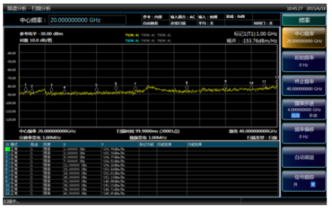

电话：800-8687-041
- 中文
- language

- 登录
- 注册
电话：800-8687-041
微波/毫米波测量仪器 >信号与频谱分析仪>AV4051A/B/C/D/E/F/G/H信号分析仪
AV4051A/B/C/D/E/F/G/H信号分析仪


适用于复杂信号分析的信号/频谱分析仪
AV405I系列信号/频谱分析仪具有优良的测试动态范围、相位噪声、幅度精度和测试速度,具备高灵敏度频谱分析、符合标准的功率测量组件。1Q分析、瞬态分析、脉冲参数分析、音频分析、模拟调制测量、相位噪声测试等多种测试功能,可为您提供可靠的高性能测试服务。AV4051具有良好的扩展能力,可通过灵活配置选件进一步提升测试性能,也可通过各种数字和模拟信号输出接[ ]构建测试系统或进行二次开发。可应用于航空、航天、雷达探测、通信、电子对抗、导航等领域的信号及设备测试。

功能特点
宽频率覆盖范围
最宽至50GHz的同轴频率覆盖范围
8中可选的频段配置，具备更好的经济性
可配置对应主机频段的宽频带前置放大器
具有到325GHz的外部频率扩展能力（外部频率扩展选件）
最大200MHz分析带
提供10MHz（标配）、40MHZ、200MHz等3中分析带宽配置方案
带宽可灵活选择，从10Hz至200Hz共40余档
根据带宽选择，无缝捕获时间可从1秒直至数小时
优良的测试接受能力
1GHz测量敏感度-153dBm/Hz，配置前放后典型值为-167dBm/Hz
50GHz测量敏感度-133dBm/Hz，配置前放后典型值为-151dBm/Hz
全数字中频设计，优异的刻度保真度和中频误差
收起
典型应用
展开

800-8687-041
中电仪器技术论坛
其他链接：


关于中电仪器
采购指南
技术支持
计量和服务
公司链接


中电科仪器表有限公司
青岛： 地址：山东省青岛市黄岛区香江路98号
邮箱：eiqd@ei41.com
蚌埠： 地址：安徽省蚌埠市华光大道726号
邮箱：eibb@ei41.com
www.cetcei.com 中电科仪器表有限公司
(中华人民共和国电信与信息服务业务经营许可证)编号：皖ICP备05003230 法律说明|网站地图